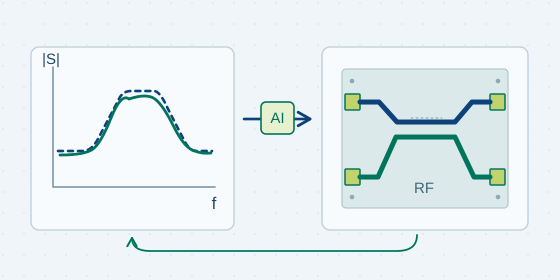

SK하이닉스 VPP 선정 및 협력SK hynix Visiting Partners Professor collaboration
다중 TSV의 고주파 특성을 측정하고 인덕턴스 추출 및 시뮬레이션 검증 방법을 연구합니다.The collaboration investigates RF characterization of multi-TSV structures, inductance extraction, and simulation validation.
전파로 땅속을 살피고, AI로 고주파 회로를 설계하고, 적층한 칩 사이를 지나는 신호를 측정합니다.We use radar to see below ground, AI to design radio-frequency circuits, and measurements to trace signals between stacked chips.
다중 TSV의 고주파 특성을 측정하고 인덕턴스 추출 및 시뮬레이션 검증 방법을 연구합니다.The collaboration investigates RF characterization of multi-TSV structures, inductance extraction, and simulation validation.
가상 기록을 사용하는 모의 퍼즐입니다. 실제 AI 모델에 접속하지 않습니다.A simulation using fictional records, not a live AI model.
단순화한 회로로 신호 흐름을 익히는 퍼즐입니다.A signal-flow puzzle using simplified circuits.




전자파와 회로를 함께 연구하는 사람들을 소개합니다.Meet the people studying electromagnetic waves and circuits together.
구성원 소개Browse people